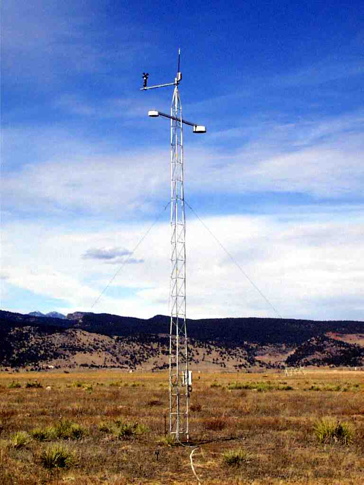

Climate Change: Simple, Serious, Solvable › Toy Models
Surviving the Night: Dirt, Air and the Glow of the Sky
After sunset, the ground keeps glowing in the infrared, and it cools. What keeps it from freezing solid by morning? Not the warm air: on a clear night the air near the ground goes still. Turn down the Earthlight that comes down from the sky and see.
When and where. A clear day and night in early autumn, near the equinox, on open grassland at Table Mountain, near Boulder, Colorado: 40° N, about as far north as Denver, Philadelphia, Madrid or Beijing, and 1,689 m up. The Sun rises about 6 a.m. and sets about 6 p.m., so the night is 12 hours long. On a usual day the air 10 m up is 22 °C (71 °F) in the afternoon and 10 °C (50 °F) before sunrise. The model's day is the average of 11 clear days and nights measured there: nine from mid-September to mid-October, and two in March and April.

How warm is it, from one noon to the next?
- The air 10 m up
- The ground (the top 1 cm)
- The ground, measured at the station on the usual days
- The ground on the day you kept
Move over the graph, or select it and use the arrow keys, to read the temperatures.
- The ground at sunset
- The ground at sunrise
- The air 10 m up at sunrise
Where does the ground's energy come from, and where does it go?
| The surface's temperature, T1 | |
|---|---|
| The layer under it, T2 | |
| The air 10 m up, Ta | |
| The wind 10 m up, U | |
| Sunlight taken in, Q | |
| Earthlight from the sky, L | |
| Earthlight the ground emits, E | |
| How strongly the air resists stirring, Ri | |
| The stirring, as a share of neutral air's, f | |
| Heat the air carries up, H | |
| Heat that leaves as water vapor, V | |
| Heat flowing down into the soil, F1 | |
| Left over, Q + L − E − H − V − F1 | |
| The surface's warming in this minute, ΔT1 |
How deep do the day's warmth and the night's cold reach?
- The surface
- 3 cm down
- 9 cm down
- 29 cm down
About this model
After sunset, nothing warms the ground from the Sun. But the ground keeps glowing in the infrared, the way everything does. On a clear evening a patch of dry ground at 20 °C emits about 420 W/m² of Earthlight. Chapter 2 of the book asks what that does over a 12-hour night, if the ground's own glow were its only energy transfer. Box 2.2 works it out: around −50 °C (−58 °F) by sunrise. Everybody would freeze to death, every night.
So where does the energy come from? There are three places it could come from:
- The soil. The day's Sunlight soaked down into it, and at night that heat flows back up.
- The air. It's warmer than the ground for most of the night, and moving air can carry heat down to it.
- The sky. The air glows in the infrared too, because its water vapor and carbon dioxide absorb and emit Earthlight. Some of that glow comes down.
This model has all three. It shows that the soil helps a lot, and the air hardly helps at all. Once the ground is colder than the air over it, the cold, heavy air near the ground is hardly stirred, and it carries little heat. Take away the Earthlight that comes down from the sky for one night, and the ground goes from 17.6 °C at sunset to −21.7 °C by sunrise. Measured on clear days and nights in Colorado, the sky sends down 280 W/m², averaged over the day and the night. That's more than the Sunlight the ground takes in, 187 W/m² on the same average. That glow from the sky is the greenhouse effect, seen from the ground.
The same is true of the whole Earth. Chapter 3's diagram of Earth's energy budget, averaged over the whole planet and the whole year, has the surface taking in 160 W/m² of Sunlight and 342 W/m² of Earthlight from the sky: more than twice as much. The Earthlight from the sky isn't a small correction to the Sunlight. It's the biggest flow of energy into the ground, day and night, and this model lets you take it away and see what happens.
How to use this page
Each graph follows a patch of grassland from one noon to the next, with the night shaded in the middle. There are three:
- "Temperatures" is what you'd feel standing there: how warm the ground is, and the air 10 m up. The dots are the ground's temperature measured at a real weather station on clear days like this one, so you can see how close the model gets.
- "Energy" shows each way energy comes into the ground's surface or leaves it. Tick the boxes above the graph to show or hide each line. The bars under it take one moment apart: energy coming in to the right, energy going out to the left.
- "Soil" shows the day's warmth soaking down into the soil and coming back up at night. The second graph is the soil at one moment, from the surface down to a meter.
You can change two things:
- The Earthlight from the sky, from 0% to 150% of what was measured on clear days and nights at Table Mountain, Colorado. The page opens at 100%, the sky as measured. The two buttons under the slider set 100% and 0%. A cloudy night sends down more than a clear one, so the slider goes past 100%.
- When the sky changes. "Every day and night" gives every hour the sky you chose, and the model runs day after day until one day repeats the day before. "Tonight only" gives the days before the sky as measured, and the sky you chose comes out only from tonight's sunset to tomorrow's sunrise. That's the question in Box 2.2: the ground starts the night as usual, and then what? "One day and night, from noon" is the same, but the sky you chose comes out at noon, with the Sun high, and stays until the next noon.
Move over a graph to read it at that time of day. Or select the graph and press the left or right arrow key. The first press starts at midnight, and each press after it moves a quarter of an hour, or an hour with Shift. The °C and °F buttons at the top switch every temperature on the graphs and under them.
"Keep this day to compare" leaves the ground's line on the temperature graph, dashed, while you change the controls. "Let the kept day go" takes it away, and "Back to a usual night" puts every control back where it started.
The "Advanced" button at the top adds two tabs. "Physics" has every equation in the model, with a worked example, and "Code" has the code itself. Advanced also adds controls for the wind and the soil, and more numbers in the table on the energy tab. "Simple" takes them away again.
The address in your browser changes as you move the controls, so you can bookmark a view or send it to someone. Nothing is sent anywhere as you work.
This page is part of the website for Climate Change: Simple, Serious, Solvable, an open textbook by Scott Denning. It goes with Chapter 2, "Energy and Radiation", and Chapter 3, "How Climate Works".
Things to try
- A usual night. On the page as it opens, the ground is at 17.6 °C at sunset and 6.8 °C at sunrise. Open "Energy" and move along the night. The sky sends down between 269 and 290 W/m² all night. The soil brings up between 65 and 110 W/m². The air brings down never more than 15.5 W/m².
- Turn off the sky for one night. Choose "Tonight only", then press "No Earthlight from the sky". The ground starts the night at 17.6 °C, as usual, and falls to −21.7 °C by sunrise. The air over it is just as warm as before, but about an hour after sunset it goes still and carries nothing more all night. The soil works hard, bringing up as much as 298 W/m², and it still isn't nearly enough.
- Turn it off for a whole day. Now choose "One day and night, from noon". The Sun shines all afternoon as usual, but without the sky's glow the ground cools anyway: from 30.5 °C at noon to 1.6 °C by sunset, when on a usual day it's still 17.6 °C. By sunrise it's −24.0 °C. Sunlight alone can't keep the ground warm, even in the middle of the day.
- Turn it off for good. Now choose "Every day and night". With no Earthlight from the sky on any night, the soil never gets back the heat it gave up. The ground is never warmer than −7.8 °C, even at midday, and it's −53.1 °C at sunrise. Open "Soil": 29 cm down it settles near −35 °C. The air 10 m up is still swinging between 10 and 22 °C, and it makes no difference.
- Half the sky. Choose "Tonight only" again and set the slider to 50%. The ground is at −7.1 °C at sunrise: even half the sky's glow keeps the night from being bitter, but it isn't enough to stop a frost.
- A cloudy night. Choose "Every day and night" and set the slider to 130%. Low clouds glow almost as a black surface at the air's temperature would. The ground is at 11.7 °C at sunrise, and it stays warmer than the air all night, so the air carries heat up from it even at night.
- Two days on one graph. Press "Keep this day to compare" before you change a control, and the ground's line from the day you kept stays on the temperature graph as a dashed line.
Where the numbers come from
Five things in the model are measured, not worked out: the Sunlight reaching the ground, the Sunlight the ground reflects, the temperature of the air 10 m up, the wind, and the Earthlight that comes down from the sky. They're the average of 11 clear days and nights at Table Mountain, a NOAA weather station on open grassland near Boulder, Colorado, measured in 2018 to 2024. They stay the same whatever the ground does. The model works out everything else: the temperature of the ground and the soil, and every flow of energy between them, the air and the sky.
The soil is moist loam, partway between soaked and dry. The Physics tab, in the Advanced view, has every number and where it comes from.
Credits
By Scott Denning, for Climate Change: Simple, Serious, Solvable.
The question is Scott Denning's homework problem, "Surviving Night", and the stirring of the air is from his earlier web app on the air's resistance. The Sunlight, the air's temperature, the wind and the Earthlight from the sky were measured by NOAA's SURFRAD station at Table Mountain, Colorado. The photo of the station's tower is by NOAA's Global Monitoring Laboratory, from its page on the station, and is in the public domain. Claude, from Anthropic, built this model from them, to run in your browser.
The physics
This tab is the whole model, written out. You don't need any of it to use the page. But the model is eight steps, and you can follow every one of them with a calculator.
The equations
The model cuts the top meter of the soil into 11 layers, thin at the top and thicker farther down, and gives each layer one temperature. Then it asks one question, over and over: how much does each layer warm or cool in the next minute? It adds the answer to the layer's temperature, moves the clock on a minute, and asks again.
Five things come from measurements at Table Mountain, near Boulder, Colorado, averaged over 11 clear days and nights: the Sunlight reaching the ground, the Sunlight the ground reflects, the air's temperature 10 m up, the wind and the Earthlight from the sky. They're in the table in step 1. You choose s, the share of the measured Earthlight from the sky. These numbers never change unless you change them with the controls for the wind and the soil:
| Letter | What it is | Its value |
|---|---|---|
| σ | the Stefan–Boltzmann constant of Chapter 2 (the Greek letter sigma), in W/m² per K⁴ | 5.67 × 10⁻⁸ |
| g | gravity, in m/s² | 9.81 |
| z | the height of the air's temperature and wind, in meters | 10 |
| w | the share of the measured wind; the Advanced controls set it from 25% to 200% | 1 |
| z0 | the roughness of short grass, in meters | 0.03 |
| κ | von Kármán's constant (the Greek letter kappa) | 0.4 |
| P | the air's pressure at Table Mountain, 1,689 m up, in pascals, from the standard atmosphere | 82,613 |
| R | the gas constant for dry air, in J/kg per K | 287 |
| cp | the heat capacity of air: the joules it takes to warm a kilogram of it by 1 K | 1,004 |
| β | the Bowen ratio (the Greek letter beta): the heat the air carries away, for each unit of heat that leaves as water vapor | 1.5 |
| k | the soil's conductivity, which is how well it carries heat, in W/m per K | 1 |
| c | the soil's heat capacity: the joules it takes to warm a cubic meter of it by 1 K | 2,000,000 |
| Δz1 | the thickness of the top layer, in meters. Each layer is 1.4 times as thick as the one above it, so Δz2 is 0.014. | 0.01 |
| Δt | the time step, in seconds. Δ is the Greek capital letter delta. Here it means a small piece of something, or a small change in it. | 60 |
The layers are numbered from the top. T1 is the temperature of the top layer, which the page calls the surface. T2 is the temperature of the layer under it, and so on down to T11. They're all in kelvins.
1. How much Sunlight does the surface take in?
The station measures the Sunlight reaching the ground every minute, Sm, and the Sunlight the ground reflects back up, Sr. Both are in the table below. Between two hours, the model draws a straight line. The surface takes in the difference:
in W/m². At noon the station's grass reflects 21% of the Sunlight, its albedo, and takes in 642 W/m². When the Sun is low it reflects more: 31% at 5 p.m. The Sun sets at 6 p.m. and rises at 6 a.m., as it does everywhere at an equinox. Each number in the table is an average over the hour around it, so the Sunlight fades out over the half hour after sunset, and comes on over the half hour before sunrise.
| Time | Sunlight (W/m²) | Reflected (W/m²) | Air 10 m up (°C) | Wind (m/s) | Earthlight from the sky (W/m²) | The ground (°C) |
|---|---|---|---|---|---|---|
| noon | 815.0 | 172.8 | 20.0 | 2.8 | 284.7 | 30.4 |
| 1 p.m. | 772.4 | 165.7 | 21.0 | 2.9 | 288.9 | 30.6 |
| 2 p.m. | 667.5 | 148.2 | 21.7 | 3.0 | 291.9 | 29.3 |
| 3 p.m. | 508.5 | 120.9 | 21.9 | 3.4 | 293.8 | 26.6 |
| 4 p.m. | 309.9 | 83.3 | 21.5 | 3.1 | 294.2 | 22.9 |
| 5 p.m. | 115.7 | 35.3 | 20.1 | 2.5 | 292.8 | 17.0 |
| 6 p.m. | 10.7 | 2.7 | 16.4 | 3.2 | 289.5 | 12.1 |
| 7 p.m. | 0.0 | 0.0 | 14.4 | 4.1 | 284.7 | 10.9 |
| 8 p.m. | 0.0 | 0.0 | 13.3 | 4.3 | 283.1 | 10.1 |
| 9 p.m. | 0.0 | 0.0 | 12.4 | 4.5 | 281.2 | 9.5 |
| 10 p.m. | 0.0 | 0.0 | 11.8 | 4.4 | 278.9 | 8.8 |
| 11 p.m. | 0.0 | 0.0 | 11.4 | 4.0 | 277.0 | 8.3 |
| midnight | 0.0 | 0.0 | 11.3 | 3.7 | 275.7 | 7.6 |
| 1 a.m. | 0.0 | 0.0 | 10.9 | 3.9 | 273.6 | 7.2 |
| 2 a.m. | 0.0 | 0.0 | 10.5 | 3.4 | 271.7 | 6.6 |
| 3 a.m. | 0.0 | 0.0 | 10.0 | 3.6 | 270.6 | 6.3 |
| 4 a.m. | 0.0 | 0.0 | 9.7 | 2.9 | 269.6 | 5.5 |
| 5 a.m. | 0.0 | 0.0 | 10.0 | 2.7 | 268.9 | 4.9 |
| 6 a.m. | 16.6 | 6.1 | 10.4 | 2.7 | 269.5 | 5.8 |
| 7 a.m. | 155.7 | 48.6 | 13.0 | 1.8 | 268.8 | 10.9 |
| 8 a.m. | 363.0 | 90.5 | 15.7 | 1.5 | 272.7 | 17.4 |
| 9 a.m. | 552.5 | 121.0 | 17.0 | 1.9 | 276.8 | 22.5 |
| 10 a.m. | 697.2 | 140.2 | 18.7 | 2.2 | 282.2 | 26.9 |
| 11 a.m. | 783.1 | 148.9 | 20.6 | 2.5 | 289.3 | 30.4 |
The last column is the ground's own temperature, which the station works out from the Earthlight the ground emits. The model doesn't use it. The dots on the temperature graph are these numbers, and "How it was checked" compares the model with them.
2. How warm is the air, and how hard is the wind blowing?
The model doesn't work out the air's temperature or the wind. It reads them from the table, again with straight lines between the hours. The air 10 m up is warmest at 3 p.m., at 21.9 °C, and coolest at 4 a.m., at 9.7 °C. The model's Ta is that, in kelvins. Call the measured wind Um. The model's wind is
in m/s, where w is 1 unless you change it in the Advanced view. Look at the wind in the table: it blows harder in the evening, 4.5 m/s at 9 p.m., than in the morning, 1.5 m/s at 8 a.m. On clear nights at the foot of the Rockies, cold air drains down off the mountains.
3. How much Earthlight comes down from the sky?
The air glows in the infrared, mostly from its water vapor and carbon dioxide, and some of that glow comes down to the ground. The station measures it. Call what it measured Lm, from the table. The model's sky sends down the share s of that:
in W/m². s is the number on the slider, as a fraction: 100% is 1. Look at the table: the sky's glow hardly changes from day to night. From 4 p.m. to 7 a.m. the air 10 m up cools by 8.5 K, but the Earthlight from the sky falls by only 25 W/m². Most of that glow comes from air far above the ground, which hardly feels the night.
4. How much Earthlight does the surface emit?
This is the Stefan–Boltzmann law of Chapter 2:
in W/m². Chapter 2 writes it with the letter F. Here it's E, for emitted, because step 7 needs the F.
5. Is the air near the ground being stirred?
Air carries heat to or from the ground only while it's stirred: while gusts and swirls, called eddies, keep swapping air near the ground for air from higher up. The wind makes eddies. But when the ground is colder than the air over it, the air next to the ground is colder and heavier than the air above it. An eddy has to lift that heavy air, and the wind has to do the work. A number called the Richardson number, Ri, compares the two:
The top is how hard the heavy air resists being lifted. The bottom is how hard the wind stirs (U²). By day the ground is warmer than the air, so Ri is below zero: the warm air near the ground rises by itself. At night Ri is above zero. The colder the ground gets, the bigger Ri gets, and the gentler the wind, the faster it grows.
6. How much heat do the air and water vapor carry?
First, how hard is it to push heat through well-stirred air between the ground and 10 m up? That's the air's resistance, r, in seconds per meter. Two roughness lengths go into it. The wind feels the grass as z0. Heat has to cross the still layer of air that clings to each blade of grass, so it feels the ground as smoother, with a roughness length a tenth as big:
ln is the natural logarithm. A stronger wind (U) and rougher ground (z0) make more eddies, so the resistance is lower. With the wind as measured, r runs from 66 s/m in the windiest hour to 195 s/m in the calmest.
Second, how much stronger or weaker is the stirring than in neutral air, with the ground and the air at the same temperature? Call that f. It comes from a theory of the air near the ground called Monin–Obukhov similarity, as Scott Denning's earlier app wrote it. The stability, ζ (the Greek letter zeta), goes with Ri this way:
where ψm and ψh (the Greek letter psi) are how much the air's stability changes the stirring of the wind and of heat. At night, when the ground is colder than the air, ζ is above zero, and ψh is the same as
Put that into the equation for Ri, and it's a quadratic in ζ: the model solves it exactly. As Ri grows toward 0.2, ζ grows without end, and the stirring dies away. When Ri reaches 0.2 the model sets f to 0. The air near the ground has gone still, and it carries no heat at all.
By day, when the ground is warmer than the air, ζ is below zero. Warm air near the ground rises by itself, and the ψ's come from
arctan is the inverse tangent, in radians. There's no way to turn the equation for Ri round and get ζ from it directly, so by day the model finds it by trying: it starts with ζ between −2 and 0, and halves that range 50 times, each time keeping the half whose Ri is on the right side. Far below −2 these equations break down over grass this smooth. So when Ri is below −0.61, the model takes ζ as −2. In the day that repeats, Ri never gets below −0.50, so that only happens in the first hours of a run. It happens in the afternoon too if you set the sky to 120% or more, or turn the wind down in the Advanced view: the ground gets hot enough that the model holds ζ at −2 for an hour or more. Day or night,
At noon on the page as it opens, Ri is −0.46 and f is 1.79: rising air stirs almost twice as hard as the wind alone.
Third, how much does a cubic meter of air weigh? Table Mountain is 1,689 m up, where the air is thinner than at sea level. The ideal gas law gives its density, ρ (the Greek letter rho), from its pressure and its temperature:
in kg/m³. At 15 °C it's 1.00 kg/m³; at sea level it would be about 1.2. Thinner air carries less heat.
Then the heat the air carries up from the surface is
in W/m². By day the surface is warmer than the air, so H is above zero and the air carries heat away. At night H is below zero: the air brings heat down. But the colder the ground, the smaller f, so the air brings down less just when the ground needs it more.
Last, some heat leaves as water vapor. The soil is moist, between the wettest it stays after rain drains away and the driest that plants can still draw water from. Water that evaporates from it takes heat with it. The model takes that heat to be a fixed share of H:
in W/m², while H is above zero. When the ground is colder than the air, nothing evaporates, and V is 0.
7. How much heat flows down through the soil?
Heat flows from a warmer layer to a cooler one. From the top layer into the second layer, it flows at
in W/m². A bigger difference in temperature makes a faster flow, and a longer way to go makes a slower one. The middles of the two layers are half of Δz1 + Δz2 apart, and that half is where the 2 on top comes from. At night the soil under the surface is warmer than the surface, so F1 is below zero: heat flows up.
8. How much does a layer warm in one step?
The top layer keeps what's left over: the Sunlight and the Earthlight from the sky that it takes in, less the Earthlight it emits, less what the air and the water vapor carry away, less what flows on down. In one time step that warms it by
kelvins. The top of the fraction is the energy left over in the step, in joules for each square meter. The bottom is the energy it takes to warm a square meter of the layer by 1 K. When more goes out than comes in, ΔT1 is below zero and the layer cools.
A layer farther down gets no light and touches no air. It keeps what flows in from above, less what flows out below:
Nothing flows out of the bottom of the lowest layer. The model works out every flow from the temperatures at the start of the step, and only then changes the temperatures.
A worked example
Leave the controls as the page opens them, and open the "Energy" tab. Select the graph and press the right arrow key once, which puts you at midnight. Then hold Shift and press the right arrow key once more. You're at 1:00 a.m., and the table under the graph says the surface is at 282.566 K, the layer under it is at 283.400 K and the air 10 m up is at 284.030 K.
- Sunlight (step 1). The table says 0 at 1 a.m.: the Sun is down, so Q is 0.
- The air and the wind (step 2). The table says 10.9 °C at 1 a.m.; to two places it's 10.88 °C, so Ta = 10.88 + 273.15 = 284.03 K. The wind is U = 1 × 3.86 = 3.86 m/s.
- Earthlight from the sky (step 3). L = 1 × 273.6 = 273.6 W/m².
- Earthlight from the surface (step 4). E = 5.67 × 10⁻⁸ × 282.566⁴ = 361.5 W/m².
- Stirring (step 5). Ri = 9.81 × 10 × (284.03 − 282.566) ÷ (284.03 × 3.86²) = 0.034.
- The air's heat (step 6). The two logarithms are ln(10 ÷ 0.03) = 5.809 and ln(10 ÷ 0.003) = 8.112, so r = 5.809 × 8.112 ÷ (0.4² × 3.86) = 76.3 s/m. Ri is above zero, and solving the quadratic gives ζ = 0.168, so ψm = ψh = −5 × 0.168 = −0.84. Then f = 5.809 × 8.112 ÷ ((5.809 + 0.84) × (8.112 + 0.84)) = 0.792, and ρ = 82,613 ÷ (287 × 284.03) = 1.013. So H = 1.013 × 1,004 × (282.566 − 284.03) × 0.792 ÷ 76.3 = −15.5 W/m². The air is bringing 15.5 W/m² down to the ground. H is below zero, so V is 0.
- The soil's heat (step 7). F1 = 2 × 1 × (282.566 − 283.400) ÷ (0.01 + 0.014) = −69.5 W/m². The soil is bringing 69.5 W/m² up.
- What's left over (step 8). 0 + 273.6 − 361.5 − (−15.5) − 0 − (−69.5) = −2.9 W/m².
- The cooling (step 8). ΔT1 = 60 × (−2.9) ÷ (2,000,000 × 0.01) = −0.009 K.
Those are the numbers in the table under the graph. The surface emits 361 W/m². The sky gives back 274 of it, the soil 70 and the air 15. What's left cools the surface by 0.009 K in the next minute.
Where the equations stop
This is a toy, and it leaves a lot out.
- The air, the wind and the sky are measured, not worked out. They follow the same day whatever the ground does. Real air near the ground cools at night partly because it loses heat to the ground.
- Evaporation is a fixed share. Real evaporation depends on how wet the soil is, how dry the air is and how hard the wind blows. The model only knows that it takes two-thirds as much heat as the air carries away.
- The Sun shines whatever the sky. The Sunlight is measured on clear days, so a sky above 100% is a cloud that lets the Sunlight through.
- Stirring stops at once. Real air near the ground on a still night is stirred now and then, in gusts. The model's air is either stirred or still. By day, the deep layer of rising air, a kilometer or more, makes gusts of its own in light winds; the model leaves those out.
- The ground is soil with grass on it, as one layer. The model's top centimeter is soil, and its roughness and the Sunlight it reflects are the grass's. Real grass is a thin layer of leaves over the soil, and it cools faster at sunset than soil does.
- The same soil all the way down, and nothing flows in or out through the bottom of the lowest layer, almost a meter down.
A few details
- The layers. There are 11. The top one is 1 cm thick and the lowest one ends 0.99 m down. The soil graph's lines for 3, 9 and 29 cm are the layers whose middles are 3.4, 9.0 and 29.1 cm down.
- Reaching a day that repeats. The model starts every layer at 288.15 K and runs day after day. It stops when the surface's average for the day is within 0.002 K of the day before, and every layer's average is within 0.002 K of the surface's. That takes 5 days for the sky as measured.
- A shortcut for the deep layers. Left to itself, the soil a meter down would take months to settle. But over a day that repeats, no layer gains or loses heat on balance, so every layer has the same average temperature. After each day the model moves each layer by the difference between the surface's average and its own.
- Where the soil ends up. The starting 288.15 K doesn't matter: the day that repeats is the same from any start. Nothing sets the soil's temperature. It settles wherever the surface's energy balances over a day. On the page as it opens, every layer averages 16.9 °C, warmer than the air's average of 15 °C, because the ground in the Sun gets hot by day. With no Earthlight from the sky on any night, every layer averages −35.1 °C.
- Tonight only, or one day and night. With "Tonight only" or "One day and night, from noon", the model first reaches the day that repeats with the sky as measured. Then it runs one more day, from noon to noon, with the sky you chose between sunset and sunrise, or all through it. So the change starts from soil that has had usual days.
See the equations at work
These use the controls for the wind and the soil, which are only in the Advanced view. Press "Back to a usual night" between them.
- When does the air bring heat down? On the page as it opens, open "Energy" and move along the night. Until about 8:10 p.m. the ground is still warmer than the air 10 m up, and the air carries heat away from it. After that the air brings some down, but never more than 15.5 W/m², because the colder the ground gets, the less the air near it is stirred (step 6). Without the sky's glow, Ri passes 0.2 within 65 minutes of sunset, and the air carries nothing more all night.
- Change the wind. Set the wind to 50%. The afternoon gets hotter: the ground peaks at 35.3 °C instead of 31.0 °C, because the air carries less of the Sun's heat away. Set it to 200%, and the peak is 28.7 °C, and the ground is at 8.3 °C at sunrise instead of 6.8 °C. Over a usual night the air now brings down 18.5 W/m² on average, instead of 6.9.
- Can the wind save the night? Keep the wind at 200%, then choose "Tonight only" and press "No Earthlight from the sky". A wind this strong keeps the air stirred until about 4:15 a.m., when the wind drops, and over the night it brings down 128 W/m² on average. The ground still falls to −14.5 °C by sunrise. At the wind as measured, it's −21.7 °C. Wind helps a lot, but only the sky keeps the night mild.
- Rougher or smoother ground. Over smooth ground, with roughness 0.005 m, the ground peaks at 34.8 °C. Over the roughest choice, 0.25 m, it peaks at 27.0 °C. Roughness acts only through the eddies the wind makes as it drags over the ground, so it matters most when the wind is strong.
- Dry sand. Set the soil's conductivity to 0.3, about what dry, sandy soil has. The soil can't give back the day's heat as fast: the ground is at 2.0 °C at sunrise on a usual night. Without the sky's glow for one night, it falls to −39.3 °C.
- Drier soil. Set the Bowen ratio to 5. Less of the Sun's heat goes into water vapor, and the ground peaks at 33.0 °C.
Where the numbers come from
The Stefan–Boltzmann constant is the book's own, from Chapter 2. The ground at Table Mountain is grass. The station measures the Sunlight it reflects, but not how rough it is. For that the model takes 0.03 m, the roughness of the “open” class in the classification of terrain that the World Meteorological Organization uses: level country with low vegetation, such as grass, and few obstacles. The roughness choices in the Advanced view are four of that classification's classes. Heat's roughness length is a tenth of the wind's, as in Scott Denning's earlier app, which follows the note after equation 14.34 in Gordon Bonan's Ecological Climatology.
The Sunlight, the Sunlight the ground reflects, the air's temperature, the wind and the Earthlight from the sky come from SURFRAD, a network of stations run by NOAA that measure the energy at the ground every minute. The station at Table Mountain is on open grassland north of Boulder, Colorado, at 40.1° N and 1,689 m. The model's day is the average of the 11 clear days and nights found within about three weeks of an equinox in 2018 to 2024: noon to noon, with smooth Sunlight on both days and no clouds in the night's infrared. The station's notes give the air's temperature as measured 10 m up, and give no height for the wind; the model takes the wind as 10 m up too. The data are public domain.
The soil is moist loam, partway between field capacity, the wettest it stays after rain drains away, and the wilting point, the driest that plants can still draw water from. Its heat capacity, 2 million J/m³ per K, and its Bowen ratio, 1.5, are for soil like that. Its conductivity, 1 W/m per K, is a normal value for a loam soil. Engineers Edge's table of soils gives loams a normal range of 6 to 17.4 Btu·in/h·ft²·°F, which is 0.87 to 2.5 W/m per K. With these two numbers the day's warmth reaches about 12 cm down before it fades, so the top 10 cm of Box 2.2 is about the layer that warms and cools.
The stirring in steps 5 and 6 follows the equations in Scott Denning's earlier app on the air's resistance, which followed sections 14.5 to 14.7 of Bonan's book. The air's pressure is the standard atmosphere's at the station's height.
Augustine, J. A., DeLuisi, J. J., and Long, C. N. (2000). SURFRAD—A national surface radiation budget network for atmospheric research. Bulletin of the American Meteorological Society 81(10), 2341–2357. doi:10.1175/1520-0477(2000)081<2341:SANSRB>2.3.CO;2
Augustine, J. A., Hodges, G. B., Cornwall, C. R., Michalsky, J. J., and Medina, C. I. (2005). An update on SURFRAD—The GCOS surface radiation budget network for the continental United States. Journal of Atmospheric and Oceanic Technology 22(10), 1460–1472. doi:10.1175/JTECH1806.1
Ye, Z., and Pielke, R. A. (1995). A parameterization of Bowen ratio with respect to soil moisture availability. Advances in Atmospheric Sciences 12(4), 449–474. doi:10.1007/BF02657005
Meter Group. Plant available water: how do I determine field capacity and permanent wilting point? metergroup.com
Engineers Edge. Thermal Conductivity Rocks and Soil. engineersedge.com/heat_transfer/thermal_conductivity_rocks_and_soil_15942.htm, citing Salomone and Marlowe (1989).
Wieringa, J. (1992). Updating the Davenport roughness classification. Journal of Wind Engineering and Industrial Aerodynamics 41, 357–368. doi:10.1016/0167-6105(92)90434-C
World Meteorological Organization. Surface roughness (Davenport roughness classification), WIGOS metadata code list. codes.wmo.int/wmdr/SurfaceRoughnessDavenport
Bonan, G. B. (2008). Ecological Climatology: Concepts and Applications, 2nd edition. Cambridge University Press. doi:10.1017/CBO9780511805530
How it was checked
A set of tests comes with the model, and they run every time the page changes. Here's what they hold it to.
- The model, against the ground at Table Mountain. The station measures the ground's own temperature too, and the model never sees it. Hour by hour, the model's surface is within 3 K of it at every hour except 5 to 8 p.m. Its afternoon peak is 31.0 °C, against the station's 30.6 °C. In the early evening it runs warmer, by up to 5.5 K at 6 p.m.: the station's grass cools quickly at sunset, and the model's top centimeter of soil doesn't. Through the night it runs about 2 K warm.
- The code, against a second copy. The tests have the eight steps written out a second time, in another programming language. On the page as it opens and ten other settings, the two copies give the same temperatures to a millionth of a kelvin.
- The shortcut, against the slow way. The second copy also runs with no shortcut for the deep layers, for a year of days. It ends within 0.01 K of what the shortcut gives in 5 days.
- Energy in, against energy out. Over a day that repeats, what the surface takes in has to match what it gives out. On the page as it opens, the Sunlight and the Earthlight from the sky bring in 467.2 W/m², averaged over the day and the night, and the Earthlight it emits, the heat the air carries away and the water vapor take out 467.2 W/m².
- A shorter step, against the usual one. A time step of 15 seconds gives the same day as 60 seconds, within 0.05 K.
- The stirring, against Scott Denning's app. Step 6's f is the neutral resistance divided by the resistance his app works out for heat, day and night.
- These tabs, against the model. Every equation above is tried with the model's own numbers. The worked example is done again from the rounded numbers a calculator would use. And each number in the text is worked out again from the model, and the table of measurements from the station's files.
The code
The code is small enough to read. Two files do all the work, and they use no outside software. The comments in model.js use the same step numbers and letters as the equations on the Physics tab.
model.js is the science: the eight steps, the measured day, and the loop that runs them until a day repeats.
app.js is the page: the controls, the graphs and the words under them.
To keep a copy, save model.js or app.js.
All of the model's code is on GitHub, at github.com/airscottdenning/climate-models. You're free to use it, change it and teach with it.